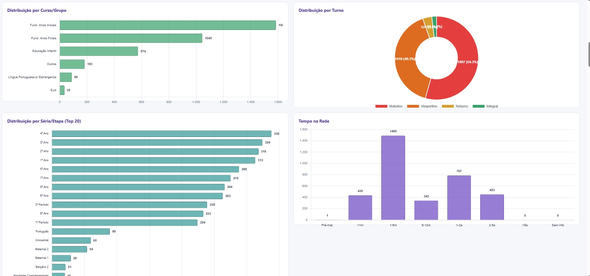

Contexto e Problema
A rede municipal de educação de Joinville atende uma população crescente de estudantes imigrantes — 3.923 alunos de 47 nacionalidades diferentes em 2026, distribuídos em mais de 170 escolas. A administração necessitava de um instrumento analítico capaz de mapear essa população, compreender sua distribuição geográfica e escolar, acompanhar o desempenho acadêmico e subsidiar políticas de acolhimento e inclusão.
Sem uma ferramenta centralizada de monitoramento, decisões sobre alocação de profissionais de apoio linguístico, programas de Português para Estrangeiros e intervenções pedagógicas específicas eram tomadas sem visibilidade completa do cenário.
Imagens do Sistema



Solução Desenvolvida
Construí um sistema integrado em duas camadas combinando um pipeline de dados em Python com uma aplicação web interativa:
- Pipeline de dados (Python): Processamento de 6 anos de registros anuais de alunos (2021–2026), identificação de imigrantes por nacionalidade (incluindo inferência a partir da nacionalidade dos pais), deduplicação por código de pessoa e geração de 18+ arquivos CSV analíticos
- Mapeamento geográfico: Mapa interativo construído com Leaflet.js mostrando a distribuição de alunos em todas as 170 escolas com coordenadas geográficas
- Dashboard analítico: 10+ gráficos interativos cobrindo distribuição por nacionalidade, gênero, curso, turno, etapa de ensino e tempo na rede
- Acompanhamento de programas: Integração com dados do programa Innovamat de matemática (278 participantes imigrantes)
- Relatórios: Geração automatizada de relatórios PDF por escola com informações detalhadas dos alunos
- Análise histórica: Acompanhamento da evolução de matrículas de imigrantes ao longo de 6 anos (2021–2026)
Bases de Dados Utilizadas
- Registros anuais de alunos 2021–2026 (65–70 campos por registro, ~14–22 MB/ano)
- Coordenadas geográficas de todas as 170 escolas
- Dados de avaliações somativas (2024, 2025)
- Dados de participação no programa Innovamat
Tecnologias Utilizadas
Resultados e Impacto
O painel tornou-se uma ferramenta central para a formulação de políticas de acolhimento e inclusão de estudantes imigrantes. Revelou padrões importantes — como a predominância de venezuelanos (2.965 alunos) e haitianos (259) — e possibilitou o monitoramento da evolução de matrículas ao longo de seis anos. Os dados subsidiaram diretamente decisões sobre alocação de profissionais de apoio linguístico, direcionamento do programa de Português para Estrangeiros e planejamento de ações pedagógicas específicas. Dado relevante: 3.239 estudantes hispanófonos identificados, viabilizando programas direcionados de apoio linguístico.